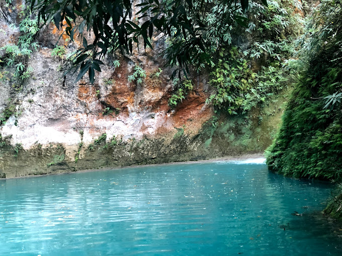
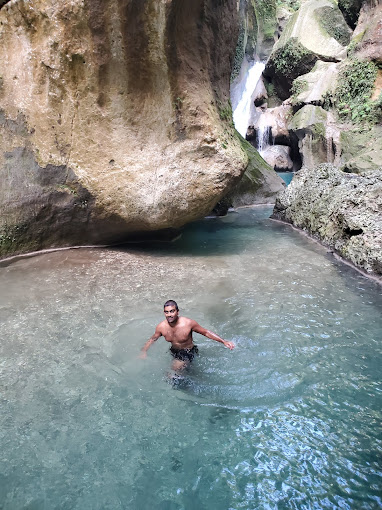

Ministère du tourisme
Ministère du tourismeBassin Bleu
- 
- 
Le Bassin Bleu est un lieu touristique populaire situé dans la commune de Jacmel, dans le département du Sud-Est en Haïti. C'est une série de trois piscines naturelles remplies d'eau cristalline qui attirent les visiteurs en raison de leur beauté naturelle et de leur emplacement isolé. Le Bassin Bleu est situé dans une forêt dense et luxuriante, accessible uniquement à pied ou à dos de cheval. Les visiteurs doivent marcher environ 30 minutes pour atteindre les piscines naturelles, mais l'effort en vaut la peine car le paysage est spectaculaire. L'eau dans les piscines du Bassin Bleu est d'un bleu profond et clair, ce qui en fait un endroit idéal pour se baigner et se rafraîchir pendant les chaudes journées d'été. Les visiteurs peuvent également sauter dans l'eau depuis les falaises environnantes, ce qui ajoute une touche d'aventure au voyage. Le Bassin Bleu est également connu pour son environnement naturel préservé et son rôle important dans l'écotourisme en Haïti. Les visiteurs peuvent voir une grande variété de plantes et d'animaux indigènes dans les environs du site, ce qui en fait une destination incontournable pour les amoureux de la nature.